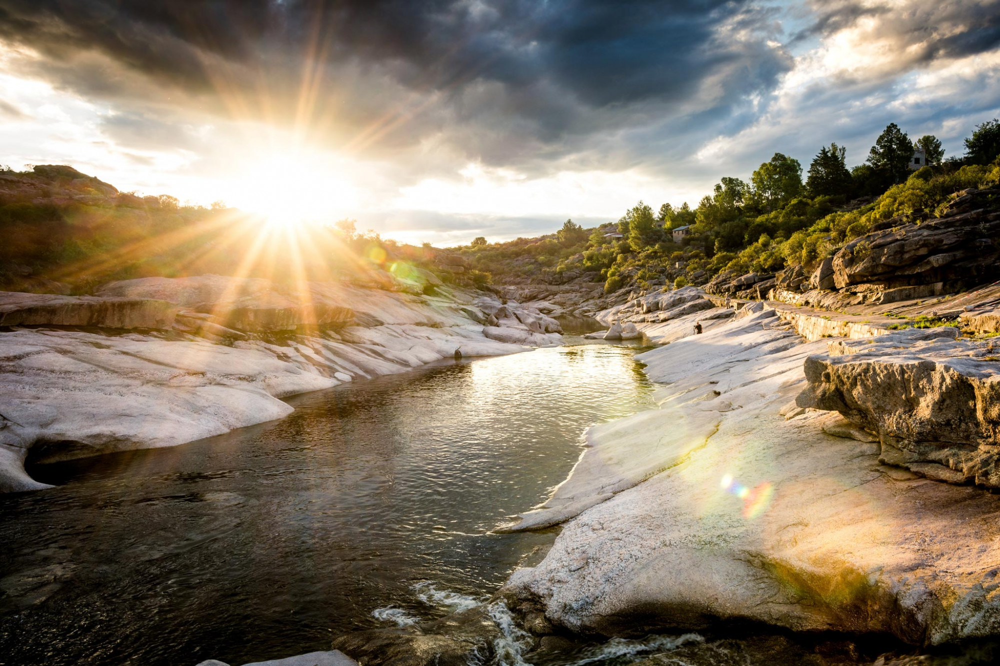

- 


El encanto del norte
Desde el centro del país, Córdoba es una de las provincias más desarrolladas y con mayor población después de Buenos Aires. En su Ciudad capital, vas a poder apreciar de una intensa vida comercial, de negocios, cultural y universitaria, que la convierten en punto de destacados encuentros, congresos y reuniones todo el año. Entre ellos, el reciente VIII Congreso Internacional de la Lengua Española 2019.
Su principal centro turístico es Villa Carlos Paz al pie del Lago San Roque, y es un punto ideal para hacer una escapada. La cercanía de ríos, sierras y el espíritu cordobés la describen como un lugar único. En épocas estivales, la oferta teatral es una de sus grandes propuestas así como disfrutar embalses y diques, aptos para la navegación y la práctica de los deportes acuáticos.
Traslasierra y los Valles de Punilla y Calamuchita, entre otras regiones cordobesas, también son muy recomendables para vivir de cerca la naturaleza de sus arroyos y ríos en un clima de paz absoluta.
El cabrito cordobés, los quesos y embutidos de Colonia Caroya son algunas de las leyendas gastronómicas y productos típicos como el alfajor cordobés. En el Valle de Calamuchita, las especialidades de la cocina centroeuropea se aprecian junto a las cervezas artesanales que se producen en Villa General Belgrano, pueblo donde se celebra la Fiesta Nacional de la Cerveza, conocido como el Oktoberfest argentino.
También es conocida por inigualables museos al aire libre que se complementan con el importante legado cultural de sitios como estancias, iglesias y museos, muchos de los cuales integran la Manzana y Estancias Jesuíticas de Córdoba, declaradas Patrimonio Cultural Mundial por la UNESCO.